Índice |
Fechar a janela |
O Banco de Conteúdos mantém, dissemina e preserva objetos educacionais, permitindo que estejam disponíveis amplamente a todos os interessados. Pode encontrar variados tipos e formatos de objetos educacionais digitais, de forma gratuíta para baixar e utilizar, com atualização constante, e colaboração de nossos parceiros.
O Banco de Conteudos está organizado em uma grande comunidade chamada "Recursos Educacionais". Possui três coleções temáticas, composta pelas disciplinas de "Português", "Matemática" e "Habilidades para a vida". Com isso, alinha-se aos objetivos do Portal de Educação Livre.
| Navegar | Voltar |
Navegar Possibilita que se percorra por todo o acervo de objetos educacionais por alguma ordem, na forma de listas organizadas por algum critério. Veja no cabeçalho e clique no menu onde aparecerão as opções para navegar.
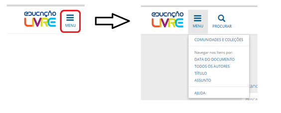
Pode-se havegar por:
Navegar Pelas comunidades e coleções Apresenta a estrutura organizacional do Banco de Conteúdos, possibilitando a navegação por essa estrutura. Ao clicar na comunidade, as coleções são apresentadas. Ao clicar em uma coleção, os objetos educacionais da coleção são apresentados.
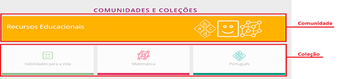
Navegar por Título Apresenta o acervo de objetos educacionais listado pelo título em ordem alfabética. Clique no objeto educacional desejado ou navegue pelo índice alfabético apresentado.
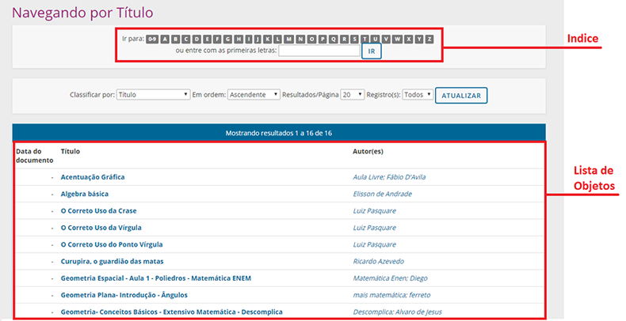
Navegar por Autor Apresenta o acervo de objetos educacionais listado pelos autores em ordem alfabética. Clique no nome dos autores para listar todos os objetos desse autor.
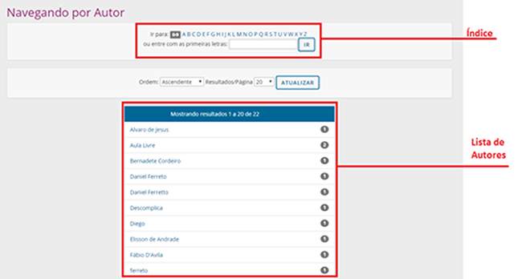
Navegar por Assunto Apresenta o acervo de objetos educacionais listado pelos assuntos indicado pelos autores. Clique em um assunto para listar todos os objetos educacionais desse assunto.
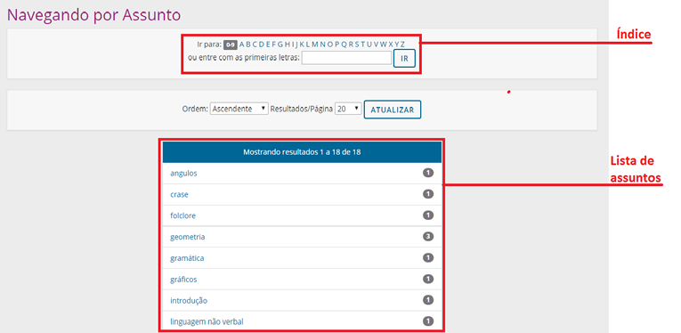
Navegar pela Data Apresenta o acervo de objetos educacionais listado pela data de criação, apresentada de forma cronológica.
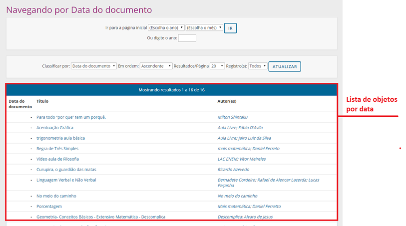
| Logar | Voltar |
É preciso se logar para:
Deve-se, no entanto, destacar que o login no Banco de Conteúdos é efetuado no Portal de EducaçãoLivre
Submissão Permite que um autor inicie uma nova submissão para o Banco de Conteúdos. A Submissão é o processo pelo qual novos objetos educacionais são depositados no Banco, por meio de um fluxo constituído pela própria submissão e avaliação, que evita que objetos educacionais com problemas sejam agregados. A submissão consiste em preencher formulários descritivos do Objeto Educacional, carga do arquivo e licenciamento, num processo rápido e feito pelo próprio autor. O processo de Avaliação é efetuado por usuários especiais que verificam se os objetos educacionais estão de acordo com as políticas do Banco.
Meu Espaço A página do usuário "Meu Espaço" apresenta as tarefas pendentes dos usuários, independente dos seus privilégios no Banco. Autor, Avaliador ou Administrador tem no "Meu Espaço" lembretes de tarefas que não terminou
Administração Para ter acesso ao menu de administrador é preciso se logar e ter os privilégios de Administrador.
| Buscar | voltar |
Use a ferramenta de busca para localizar e acessar qualquer objeto educacional pertencente ao acervo do Banco de Conteúdos. Para tanto, basta escrever o que se quer buscar na caixa de busca, logo abaixo do logotipo do Banco.
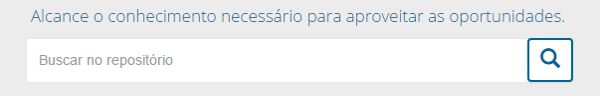
O Banco de Contúdos utiliza sistama de indexação baseado em SOLR e Lucene para efetuar as buscas. Com isso, oferta algumas facilidades de busca, tais como:
O que é buscado de forma geral
O argumento de Busca (palavra ou palavras utilizado na busca) é buscdo nos metadados, ou seja, no título, autor, assunto, descrição e no texto do arquivo (se for o caso). Assim, a ferramenta de busca do Banco de conteudos localiza e lista todos os objetos educacionais que possuam o argumento de busca, se tornando um aliado na recuperação de objetos educacionais.Stop Words (termos não indexados)
A ferramenta de busca não indexa as chamadas Palavras chaves , termos com menor semântica, como os artigos, preposições e conjunções. Tais como:"a","ainda","além","ambas","ambos","antes", "ao","aonde","aos","após","aquele","aqueles", "as","assim","com","como","contra","contudo",
"cuja","cujas","cujo","cujos","da","das","de", "dela","dele","deles","demais","depois","desde", "desta","deste","dispõe","dispõem","diversa",
"diversas","diversos","do","dos","durante","e","ela","elas","ele","eles","em","então","entre",
"essa","essas","esse","esses","esta","estas", "este","estes","há","isso","isto","logo","mais", "mas","mediante","menos","mesma","mesmas","mesmo",
"mesmos","na","nas","nao","nas","nem","nesse","neste", "nos","o","os","ou","outra","outras","outro","outros", "pelas","pelas","pelo","pelos","perante","pois","por",
"porque","portanto","próprio","própios","quais","qual", "qualquer","quando","quanto","que","quem","quer","se",
"seja","sem","sendo","seu","seus","sob","sobre","sua", "suas","tal","também","teu","teus","toda","todas","todo", "todos","tua","tuas","tudo","um","uma","umas","uns"
Truncagem
Use um caractere curinga asterisco(*) para usar a facilidade de truncagem. Com isso, permite-se buscar objetos educacionais por parte do termo, por exemplo:Aprend* recuperará todos os objetos que possuem esse radical, ou seja, aprender e todas as suas conjugações, aprendizagem, entre tantas
Variações
A ferramenta de busca, utilizando um analisador do português brasileiro, não faz distinção entre singular e plural, feminino e masculino.Busca por termo exato
Para buscar por termo exato, utilize as aspas duplas (") marcando o termo a ser buscado. Por exemplo:"objeto educacional"
Opcional e obrigatório
Para buscas mais complexas em que um termo pode ser opcional, enquanto outro deve estar presente, pode-se usar o caractere de mais (+), para criar o argumento de busca. Por exemplo: Objeto + Educacional - O termo objeto é opcional, mas o Educacional e obrigatório, ou seja, o Banco buscará por todos os objetos educacionais que tenham a palavra Educacional, sendo que objeto é opcional.Excluindo termos em uma busca
Utilize o sinal de subtração (-) antes do termo que se deseja excluir na busca, Pode-se utilizar o operador booleano NOT, para o mesmo fim. Com isso, restringem-se os resultados de busca, não recuperando os objetos educacionais que atendem os critérios.Por exemplo: Objetos -Educacional - O termo -Educacional não será buscado, ou seja, o banco busca pelos objetos educacionais que possuam o termo Objeto mas que não tenha Educacional.
Operadores Booleanos
Os operadores booleanos ou lógicos podem ser utilizados para combinar termos que compõem o argumento de busca. Para utilizá-los, utilize-os em letras maiúsculas, para diferenciá-los de termos comuns.
AND - O Operador Lógico E (and) é utilizado para buscas em que todos os termos necessitam estar presentes nos objetos educacionais. Localizar objetos educacionais cujos termos combinados pelo operador AND devem estar presentes na sua descrição.
Por exemplo: para buscar objetos educacionais que possuam os termos "literatura" e "romantismo" use o seguinte argumento de busca: literatura AND romantismo .
OR - o operador lógico OU (or) é utilizado para buscas em que um ou outro termo estejam presentes nas descrições do objeto educacional. Localizar objetos educacionais cujos termos combinados pelo operador OR pelo menos um esteja presente no objeto educacional.
Por exemplo: para buscar objetos educacionais que possuam ou o termo "álgebra" ou o termo "aritmética" na sua descrição use: álgebra OR aritmética
NOT - O Operador lógico NÃO (no) é utilizado para excluir termos em uma busca, ou seja, para buscar objetos educacionais que não contenham um determinado termo em sua descrição.
Por exemplo: para buscar objetos educacionais que não tenham o termo "experimento" na sua descrição use o seguinte argumento de pesquisa: NOT experimento .
Parênteses - Use parênteses para combinar mais que um tipo de operador, formando argumentos de busca complexos:
Por exemplo:para buscar objetos educacionais composto por prova ou avaliação de aritmética ou álgebra use: (álgebra OR aritmética) AND (prova OR avaliação)
| FACETAMENTO | voltar |
O facetamento cria variadas formas de categorização do acervo de objetos educacionais conforme critérios aplicados às descrições. Com isso, apoia a recuperação, oferecendo aos usuários listas organizadas de objetos educacionais conforme determinados termos incluídos nas descrições. Nesse sentido, as facetas criadas foram:
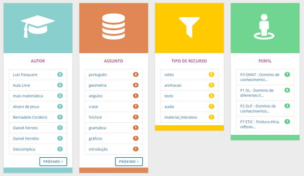
As facetas são formadas por listas contendo links, que ao ser clicadas, envia a página listando os objetos educacionais. Os números ao lado de cada elemento da lista das facetas revelam a quantidade de objetos. Com isso,refinam-se as buscas e criam-se formas diferenciadas de navegação.
| COMUNIDADES | top |
O Banco de Conteúdos é organizado hierarquicamente em que as comunidades possuem o mais alto nível. Dessa forma, possui apenas uma comunidade denominada "objetos educacionais", com isso, está preparado para gerenciar outros tipos de objetos digitais. Essa comunidade única agrega sob uma tipologia todo o acervo, visto que o Banco de Conteúdos tem por finalidade manter, preservar e dar acesso a objetos educacionais.
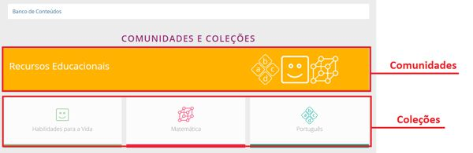
Toda Comunidade tem sua página, em que apresenta as suas coleções e objetos digitais.
| COLEÇÕES | top |
Coleções no Banco de Conteúdos foram criadas de forma disciplinar, de acordo com as finalidades do projeto. Com isso, as três coleções se referem as disciplinas de Português, Matemática e Habilidades para a vida. Essas coleções hospedam os objetos educacionais que atendam aos critérios criados nas políticas, sem subdivisões, pois podem ser reorganizadas pelas facetas.
Cada coleção possui sua página com:
Clique no objeto educacional para acessá-lo.
| AUTENTICAÇÃO | top |
A autenticação do usuário no Banco de Conteúdos dá-se por meio do Portal de Educação livre. Ao clicar no ícone de usuário, para acessar a área "Meu espaço", caso o usuário não esteja logado, o Banco de Conteúdos remete ao portal para que ele se autentique. Após o usuário se autenticar o Banco envia para a página do "Meu espaço" e indica o email do usuário no logo do usuário.
| SUBMISSÂO | top |
O Deposito, ou submissão, é o processo pelo qual novos objetos educacionais são adicionados ao acervo do Banco de Conteúdos
O processo de depósito de objetos educacionais é simples, compõe-se das seguintes etapas:
Por questões de segurança, apenas usuários autenticados podem fazer o depósito ou submissão, pois garante a identificação do usuário que o fez. Para tanto, veja em autenticação como fazer.
Ao ser autenticado o usuário é enviado ao "Meu Espaço". Nesta página são armazenadas as tarefas pendentes ou em andamento do usuário. Da mesma forma, é nessa página que está o botão para início de uma nova submissão.
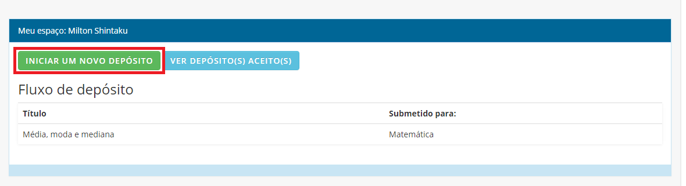
A primeira tarefa a ser efetuada no processo de depósito é selecionar a coleção na qual o objeto educacional será depositado. Para tanto, um campo apresenta as coleções que o usuário tem permissão para depositar. Mesmo que tenham outras coleções no Banco de Conteúdos, nesse processo aparecem apenas as que o usuário tem permissão de depósito.
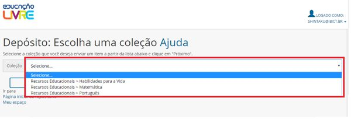
Todo o processo de depósito terá uma Barra de Acompanhamento, que indicará em que parte do processo está. Esta barra é formada por links, que possibilita ir a uma determinada etapa, caso queira alterar ou verificar o que foi efetuado. As etapas efetuadas aparecem em cor mais escura, apresentando a evolução no processo.
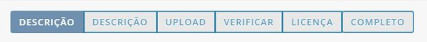
O formulário de entrada tem apenas duas páginas, basta inserir as informações requeridas nos respectivos campos, também chamados metadados. Alguns campos são obrigatórios e outros não. Para facilitar o preenchimento, alguns campos permitem a seleção das informações. A qualquer momento pode-se cancelar ou parar uma submissão, clicando em “cancelar/salvar”, permitindo cancelar a submissão ou salvá-la para terminar depois.
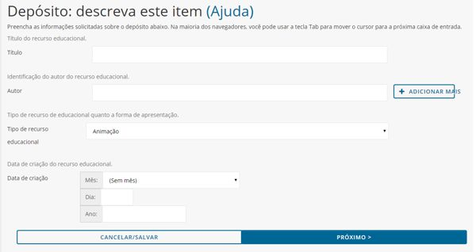
Os campos apresentados são:
A segunda página possui seis campos, com um pouco mais de complexidade para o preenchimento.
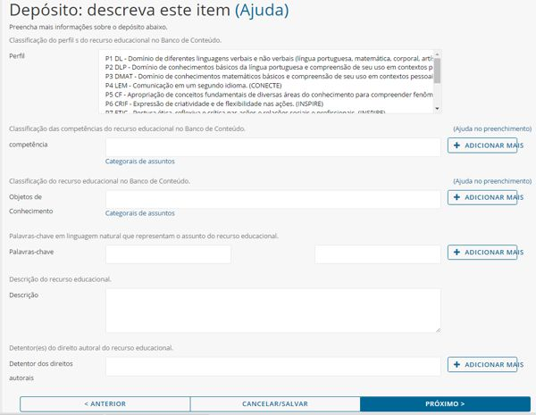
Os campos apresentados são:
Neste passo será realizada a carga (upload) do arquivo do objeto educacional, para isso esse arquivo deve estar disponível em alguma pasta do computador. Clique em “Selecione um arquivo...” para buscar nas pastas de seu computador
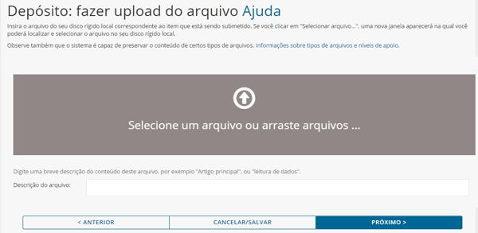
Ao selecionar um arquivo, uma barra de progresso do carregamento irá aparecer revelando que a carga (upload) está ocorrendo. Este processo pode demorar um pouco, dependendo da velocidade da rede de cada usuário e do tamanho do arquivo. Após o término da carga é possível verificar se o arquivo carregado é o correto ou adicionar mais arquivos, caso o objeto educacional possua mais de um arquivo. Caso seja necessário, pode-se alterar o arquivo ou sua descrição. Este passo é só para verificação se a carga foi bem sucedida e se foi carregado o arquivo correto.
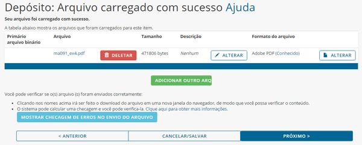
Após o término da carga do arquivo o BC apresenta todas as informações inseridas no formulário de entrada. Essas informações são exibidas na página de verificação. Essa página permite corrigir informações inseridas, antes da conclusão do depósito.
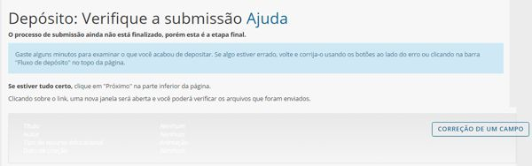
Todo objeto educacional pertencente ao acervo deve ter uma licença de distribuição padrão não exclusiva, ou seja, o Banco não precisa ter exclusividade na distribuição do objeto. Para tanto, o depositante deve ler essa licença e indicar que está de acordo com seus termos. Isso garante ao Banco que o autor ou quem depositou aceitou os critérios de depósito, assegurando o BC de problemas com direitos autorais. Para aceitar a Licença Padrão basta clicar em “Eu concedo a Licença” na página da Licença padrão.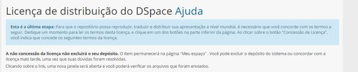
| Avaliação | top |
A avaliação é o processo pelo qual o usuário com o papel de moderador avalia se o objeto educacional atende aos critérios para tornar-se parte do acervo do Banco. Ao fazer um depósito, o objeto educacional fica em um Pool de espera, ou seja, não fica disponível aos usuários finais.
Os objetos educacionais ficam no pool de espera até que um avaliador o aceite a avaliar, então, vai para a área pessoal deste avaliador. Um avaliador pode devolver o objeto ao pool, caso verifique o objeto e não se sinta capaz de avaliá-lo. Assim, pode ser pego por outro avaliador.
Receber notificação de novo depósito por email
Após um depósito ter se completado o BC envia e-mails automáticos para todos os avaliadores cadastrados para uma determinada coleção. Com isso, permite aos avaliadores saberem que possuem uma nova tarefa a ser efetuada.

A mensagem de texto traz um link direto à página do usuário, que dá acesso ao pool de espera.
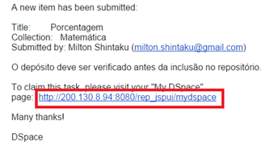
Ao clicar em “executar uma tarefa” o Banco apresenta o objeto educacional de forma de pré-visualização, com informações reduzidas. Aparecem dois botões, um para visualizar o objeto, permitindo corrigir os metadados ou aceitar tarefa de avaliação. Caso o avaliador não se sinta capacitado de avaliar pode devolver ao pool de espera. Ao clicar em “Visualizar/Abrir” são apresentados todos os campos preenchidos com a possibilidade de correção. Ao clicar em “Aceitar essa tarefa” o Banco envia para a página de avaliação.
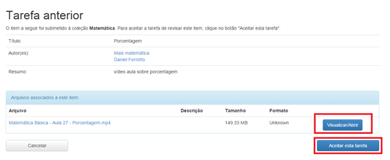
A tarefa de avaliar possibilita aprovar, rejeitar ou corrigir os metadados . Da mesma forma que pode devolver o objeto ao pool de espera. Ao aprovar o objeto educacional, tem-se o final desse processo. Ao rejeitar o objeto educacional, uma página é apresentada para que o avaliador indique os motivos da rejeição. Editar os metadados permite que o avaliador verifique se o preenchimento dos campos está de acordo com um padrão de descrição. Pode-se também completar campos que não foram preenchidos.
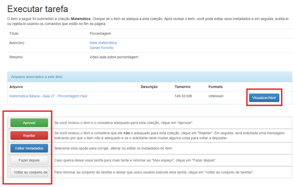
Ao final do processo a página de finalização é apresentada. Da mesma forma que o depositante recebe um email automático informando da decisão da avaliação, tanto para os aceitos, quanto para os rejeitados.